Splash Screens and Home Pages
In the previous chapter, we learned about the fundamental concepts of OneStream Dashboards, the Components that we use to build them, and how we can include our Dashboards in the End-User Experience through Workflows.
In this chapter, we will take an in-depth look at how we can use these concepts and Components to design and build an actual Dashboard that will serve as the landing page our Users see when they first sign on to the application.
By setting this Dashboard as the User’s home page, it will provide a welcoming and attractive splash screen as well as provide ‘big button’ one-click navigation to our Users’ most frequently used Workflows and reporting assets.
In the pages that follow, we will start with an initial idea – sketched on a piece of scrap paper – and work through all the steps needed to create a fully functioning Dashboard, ready to be deployed.
Splash Screens and Home Pages
Designing our Splash Screen
As we discussed in the opening chapters, a well-designed User Experience must 1. provide the functionality that the User requires and 2. provide that functionality in as clear and efficient a way as possible. With that in mind, we often build a splash screen to serve as the home page for our Users.
The purpose of a splash screen (also known as a landing page) is to give our Users a jumping-off point to guide them to the more detailed and complex application content they need with as few mouse clicks as possible, and provide that guidance in a way that is as clear and easy to understand as we can. Ideally, the User’s splash screen will be virtually ‘training-free’ – that is, we want to make the operation of this screen so obvious and intuitive that our Users will understand it at a glance.
With this in mind, we can start sketching out a design for our splash screen. Often, the design of a Dashboard starts in a very low-tech way: a blank sheet of paper, a pen, and an idea. For our hypothetical landing page, we might want to present our Users with:
A few buttons to lead them directly to their most important Workflows or Reports.
A few of our most important KPI values with positive/negative variance indicators.
A nice big picture of our new headquarters building.
Thinking through how we can assemble the landing page in a logical way, we might sketch out something like this:
Figure 11.1
We will undoubtedly revise and refine this as we build the actual Dashboard, but this is a great place to start.
From this small beginning, we can already start to think about the various Components we will need to bring our Dashboard to life, and how we will organize them in their proper positions on the screen.
Starting from the top-left corner of the screen, we can see three logical ‘sections’ of our splash screen.
The top portion of the screen will have our company’s logo, then several big buttons to take the User directly to the main application content they will need to access (e.g., “Reporting”, “Planning”, and “Consolidation”).
The center of the screen will have a large and attractive graphic, perhaps a photo of our new headquarters building, or the graphical imagery used on the cover of our most recent Annual Report.
And, at the bottom of the screen, we would like to include the primary key performance indicators that our organization uses to measure our success. Although in our sketch we show four generic KPIs as placeholders, we will determine what the actual metrics will be, and how many we can fit on the screen, as our design and build process continues.
These three sections can be thought of as a three-row grid, with the top row used for navigation, the center row used for a graphic, and the third row used for KPIs. As our design starts to take shape, we can start putting together a more formal blueprint (sometimes called a Wireframe design).
Here is the beginning of our design, sketched out in a spreadsheet.
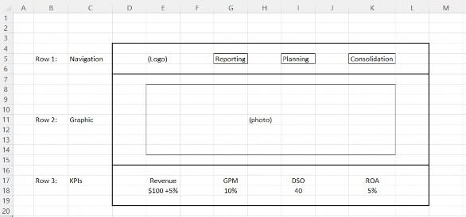
Figure 11.2
With this simple design, we can already begin to identify the Components we will need to configure our Dashboard. On the top portion of our Dashboard (Row 1), we will need four Components: a logo and three buttons. For the center portion (Row 2), we will need an image. And for the bottom portion (Row 3), we will need a handful of tiles for our KPIs, with each tile displaying the name of the KPI as well as its value.
To organize these objects, we will use a Dashboard of Type Grid as the ‘main’ Dashboard with three rows and one column.
One of the most powerful and useful concepts in the design of OneStream Dashboards is the ability to nest Dashboards within other Dashboards – or embed them. For our splash screen Dashboard, we can take advantage of this concept to further organize the Components on rows one and three. For both rows, we will use Dashboards of Type Horizontal Stack Panel, and embed these two Component Dashboards in our main three-row grid.
Splash Screens and Home Pages
Creating a Dashboard Maintenance Unit
We are now ready to start building our Dashboard. All OneStream Dashboards are created within a Dashboard Maintenance Unit (DMU), which stores and organizes one or more related Dashboards and their Component parts. The first step in creating a brand-new Dashboard is to create a new DMU to work in.
Although there is no technical requirement to use any particular naming convention, we consider it best practice to give the DMU a short, meaningful name, and include a brief 3-5 character alphanumeric identifier that will be consistently included in the names of all the Components and Dashboards within this DMU, as well as any related Business Rules that may be created.
This naming convention is used by OneStream’s MarketPlace solutions team – for example, if you download and install the People Planning MarketPlace solution, a DMU named XFW People Planning (PLP) will be created, and all the Dashboards, Components, Business Rules, and tables that make up this solution will have _PLP appended to the end of their names. Again, you aren’t required to follow this convention, but it is highly recommended – you will find it makes managing and maintaining an application with multiple large and complex Dashboards a much simpler process.
For our example, we will create a DMU called A Splash Screen (SPL), and we will use the code _SPL as the suffix of the name of all Dashboard Components. To create this DMU, we have signed on to our application with a User ID that is a member of the Security Group assigned to the DashboardAdminPage security role. Using the navigation pane on the left side of the screen, select the Application tab, and in the Presentation group, select Dashboards (Figure 11.3).
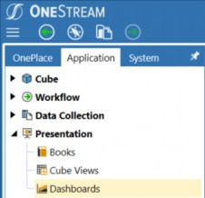
Figure 11.3
Existing DMUs will now be visible in the main portion of the screen, and the Dashboard Maintenance toolbar will be visible at the top of the screen (Figure 11.4).
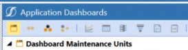
Figure 11.4
Clicking the first button on the toolbar will create a new DMU, with fields to enter the name of the DMU, an optional description, a True/False combo box to indicate if this Dashboard will be visible on mobile devices, and security settings to identify User groups that will have access to this DMU (as well as the ability to maintain it).
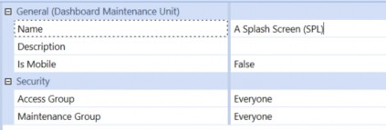
Figure 11.5
We now have a DMU, and under that DMU we have a list of the six Types of objects that are used when creating Dashboards. The first item on that list is Dashboard Groups, and that is where we will go next.
Splash Screens and Home Pages
Creating Dashboard Groups
Now that we have created our DMU, we will create two Dashboard Groups that will hold and organize our Dashboards. A single Dashboard Group can be used to hold all of the Dashboards that you create in a DMU, but you will find it much easier to work with and maintain your Dashboards if you create at least two: 1. to hold the top-level Dashboards that will be presented to your End-
Users, and 2. a second one to hold any lower-level Dashboards that we will embed in the top-level Dashboard. For example, in the splash screen we are building, we will have a top-level Dashboard that looks like the design sketch we have made, and we will have lower-level Dashboards for the navigation panel at the top of the screen, plus the KPI panel at the bottom of the screen.
With the Dashboard Group item selected, clicking the second button on the toolbar will create a new Dashboard Group, which we will name Splash Screen Dashboard (SPL). Then, we will repeat this process to create a second Dashboard Group, which we will name Splash Screen Panels (SPL).
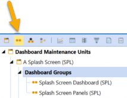
Figure 11.6
Splash Screens and Home Pages
Creating Dashboard Components
All the individual objects that the User will see on the Dashboard are called Components. For the splash screen we are creating, we have already identified several Types of Component we will need: a logo, several buttons, an image, and some labels. Each of these will be created under the Components item in our DMU.
We will start with our logo. One of the application properties that is available in every OneStream application is the Logo File, which can then be used on any Dashboard or Report without the need to have duplicate copies. Every logo Dashboard Component displays this image file. If and when this file is updated (e.g., if the company logo is revised), uploading a new image file in Application Properties will instantly update every Dashboard and Report, with no further maintenance required.
To create the logo Component for our Dashboard, select the Components item in our DMU, then click the sixth button on the toolbar. This will display a dialog box with a list of every Component Type available. Select Logo, then click OK to create a logo Component for our Dashboard.
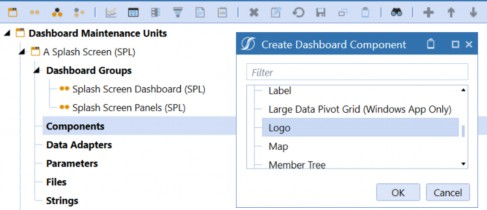
Figure 11.7
We will now configure the initial properties of this Component. All we really need right now is a name. As we have discussed, we will use the suffix _PLP for this and all other Components.
Another best practice for naming Components is to use a simple prefix to identify the Type of Component. For example, for logos, we often use lgo_ as the prefix. So, we will name this new Component lgo_Logo_SPL. There are several other properties that we will configure later, but for now this is all we need.
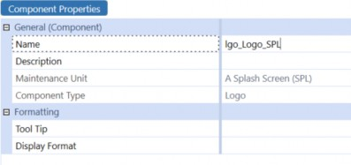
Figure 11.8
In the center of the Dashboard we are creating, we will display a large photograph of our headquarters. This Component is made up of two parts – the photograph itself (e.g., a .jpg, .gif, or
.png file), and a Dashboard Component that allows us to fine-tune the way the photograph is presented.
First, we will import our photograph. With the Files category of our Maintenance Unit selected, we can click on the Create File button in the toolbar.
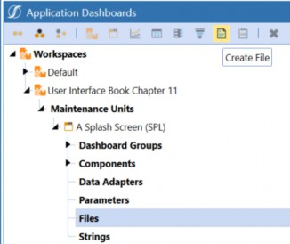
Figure 11.9
On the Content File property of our new file, clicking on the Upload File button on the right side of the screen will allow us to select a file from our local machine.
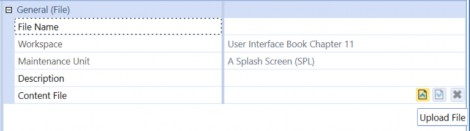
Figure 11.10
When we select a file to upload, the File Name property will automatically default to the actual name of the file we have uploaded. Since the file we have chosen has a clear, meaningful name, we will keep that name as our Dashboard file name.
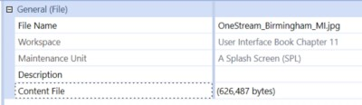
Figure 11.11
Now that we have the photograph uploaded to our application, we can create the Image Component that we will use to display this photo on our Dashboard. With the Component category of our Maintenance Unit selected, we will click the Create Component button on the toolbar and select Image as the Component Type on the dialog box. Using our naming convention, we will enter img_Office_SPL as the name of this Component and set the File Source Type to Dashboard File. On the Url or Full File Name property, we can click the […] button on the right side of the screen and select the .jpg file we just uploaded.
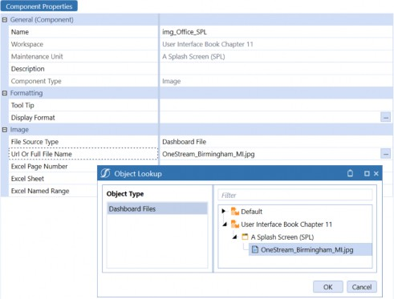
Figure 11.12
Now that we have a preliminary design for our Dashboard, and we have Components to work with (our standard logo and our custom photograph), we can start to build the actual Dashboard.
Splash Screens and Home Pages
Creating the Dashboard
If we refer to our wireframe diagram (Figure 11.2), we can see that the main frame of the Dashboard will be a grid with three rows (the header, the central image, and the KPIs at the bottom). Each of these three rows will use an embedded Dashboard to organize the Components in those sections.
First, we will create the main frame Dashboard. Since this will be our primary Dashboard, we will create this in the Dashboard Group Splash Screen Dashboard (SPL). With that Dashboard Group selected, clicking the Create Dashboard button will open the Dashboard Properties screen for our new Dashboard.
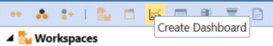
Figure 11.13
We will name our main Dashboard 0_Frame_SPL. Again, although it is not required, this name follows a best practice naming convention that includes a number as the prefix, a meaningful name, and then the consistent Dashboard code we have chosen (SPL) as the suffix.
Since we are building the main Dashboard as a three-row grid, we will select the layout Type as Grid. This will then display the properties for a Grid Dashboard, and we can select the number of rows as 3 and the number of columns as 1 (see Figure 11.14).
For several of the following settings, we need to specify the height or width of a particular Component. Rather than inches or centimeters, the unit of measure we use for these dimensions is called a ‘pixel’ (which means ‘picture element’). If you look at your computer monitor through a magnifying glass, you will see that everything displayed is made up of tiny dots – these are the pixels. When we specify the resolution setting of our monitor (say, 1920 x 1080), we are really describing the width and height of our screen in pixels. So, if we define an object as 960 pixels wide by 540 pixels high, this will take up about 25% of the screen on our 1920 x 1080 monitor. If our monitor is 20 inches wide, there are about 96 pixels per inch, and this object will appear to be about 10 inches tall by 5 ½ inches wide.
Following our design, we want the first row to be relatively narrow to display our logo and a few buttons. Setting the row height for this row to be 100 pixels high – a little over an inch on our 20-inch monitor - should be a reasonable first guess. We can always change this setting as we fine-tune the look of the Dashboard. We will make row three – at the bottom of the screen – 100 pixels too, and let the middle row fill whatever screen space is left (that’s what the default * in row 2’s height, and column 1’s width, will do. There are several other ways to define row height and column width, but we will discuss those later.).
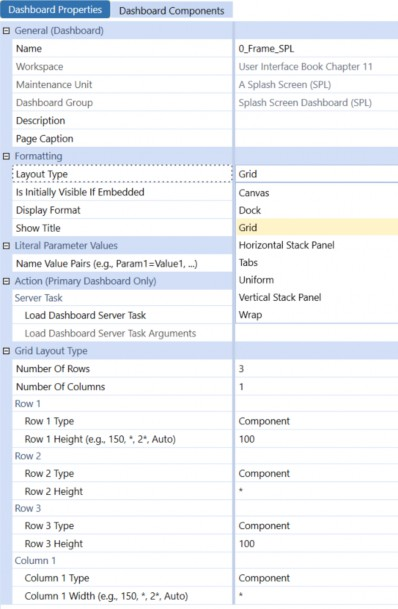
Figure 11.14
Again, referring to our wireframe diagram (Figure 11.2), we will also create two additional Dashboards that will be embedded in our main Dashboard. These embedded Dashboards will contain and organize the logo and other Components at the top of the screen, and the key performance indicators at the bottom of the screen. We will create these as simple Horizontal Stack Panels – effectively, one-row grids that simply line up the Components we assign to them, from left to right, in the order we specify.
With our Splash Screen Panels (SPL) Dashboard Group selected, we will add these two Dashboards, naming them 1_Header_SPL, and 2_Footer_SPL, selecting layout Type Horizontal Stack Panel for each (Figure 11.15). These stack panel Dashboards are very simple to configure; no other properties need to be specified.
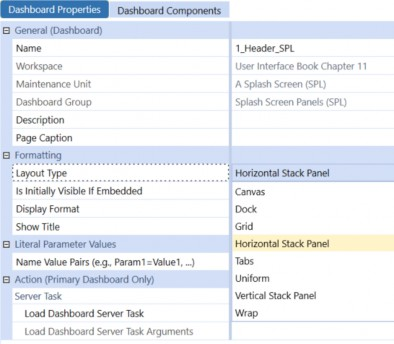
Figure 11.15
Splash Screens and Home Pages
Assembling our Dashboard
Now, we can add our Components to our Dashboard.
Our first Component – the logo – belongs at the top of the screen, so we will add it to the 1_Header_SPL Dashboard we created in the Splash Screen Panels (SPL) Dashboard Group. With that Dashboard selected, clicking on the Dashboard Components tab will activate the Add Dashboard Component [+] button in the toolbar. When we click this button, we will see a dialog box listing all the Dashboard Components available to us in this Maintenance Unit (Figure 11.16).
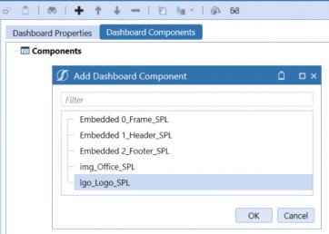
Figure 11.16
When we select our logo Component and click OK, that Component is added to the list of Components that will be displayed on this Dashboard. Later, we will add other Components here to complete the header section of our Dashboard.
This header Dashboard will be used as the first row of our main Dashboard. Using the same process, we will add this Dashboard as the first Component of our main Dashboard by selecting the Dashboard 0_Frame_SPL from our Splash Screen Dashboard (SPL) Dashboard Group, selecting the Dashboard Components tab, and using the Add Dashboard Component [+] button.
This time, instead of selecting the logo, we will select the header Dashboard itself, which will be listed in the Add Dashboard Component dialog box as Embedded 1_Header_SPL (Figure 11.17).
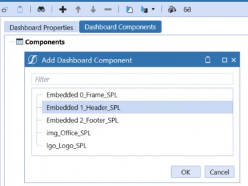
Figure 11.17
Embedded Dashboards are a special Type of Component that OneStream creates every time you create a Dashboard. This is how we include ‘subsidiary’ Dashboards, such as our header and footer Dashboards, as rows or columns in our main Dashboard. Later, we will learn how we can also create our own embedded Dashboard Components that we can use to embed content from other Dashboard Maintenance Units, dynamically change the content displayed in one of our main Dashboard panels, and more.
To finish assembling the first draft of our main Dashboard, we will add the content for the second row (the image) and the third row (the footer). It is important that the Components are listed in the correct order – for example, we don’t want our header to appear in the middle of the screen. If we have selected these Components in the wrong order, we can simply use the Move Up and/or Move Down arrow buttons in the header to rearrange them.
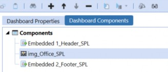
Figure 11.18
With our Dashboard now assembled, we can have our first look at it in User mode. With the main Dashboard selected, clicking the View Dashboard button in the toolbar will open the Dashboard live in a new tab (Figure 11.19).
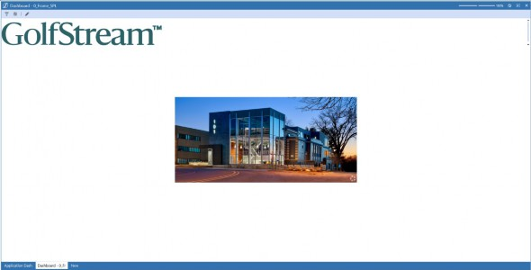
Figure 11.19
Splash Screens and Home Pages
Adjusting Component Display Formatting
It’s not a masterpiece (yet), but it’s a start!
Before we continue fleshing out our Dashboard, let’s make a few revisions. First, the GolfStream logo seems a little too large, and it would probably look nicer if it weren’t pressed right up against the left edge of the frame. Also, the photograph is way too small – we want the picture on our splash page to have a little more…well, splash.
We will start with the logo. Back on our Application Dashboard Maintenance tab, we can expand the Components hierarchy until we can select the lgo_Logo_SPL Component. On the Display Format property, clicking the […] button – on the right side of the screen – will open a dialog box that allows us to make various decisions about how the logo will appear. To make our logo a little smaller, we will specify a Height of 60 pixels. To put a little white space between the edge of the logo and the left frame of the Dashboard, we will specify a MarginLeft value of 30 pixels. We will also set the MarginRight value to 30 pixels, so there will be some white space to the right of the logo too.
Next, we will make our image object more prominent. Again, when we select the img_Office_SPL Component and click the […] button on the Display Format parameter, we will see various settings to control the size and position of this Component.
The ImageStretch setting lets us automatically resize the image to fill the available space – the UniformToFill option will keep the proportions of the image consistent to avoid distorting it but allow the image to expand in every direction to fill the space available (even if that means some of the image is cropped out if there isn’t enough room). As with the logo, we don’t want the image to press all the way up to the frame of the Dashboard, so we will set both the MarginLeft and MarginRight parameters to 30 pixels.
After saving these changes and re-running the Dashboard, it now looks like this – not too bad!
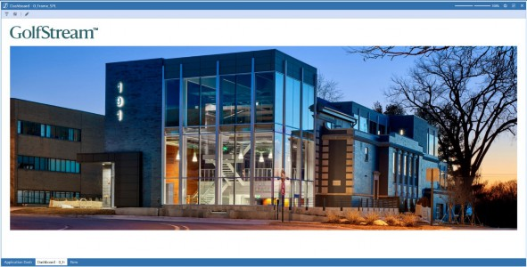
Figure 11.20
Splash Screens and Home Pages › Adding Navigation Buttons
Our First Button
The first button we will add to our Dashboard will be very simple: we will provide our Users with a one-click path to our application’s Guided Reporting home page (Guided Reporting, like many of OneStream’s MarketPlace solutions, uses a well-designed OneStream Dashboard as its User interface.)
Let’s start with the basics, and just add the button without using any specific formatting or even making it ‘do’ anything just yet.
To create this first button, we will select the Components category of our Dashboard Maintenance Unit, click the Create Dashboard Component button, and select Button from the dialog box.
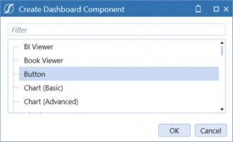
Figure 11.21
As with our other Components, we will give this new button a name following our consistent naming convention – in this case, we will call it btn_Reporting_SPL. We will also add some Text – for this button, we will show the word Reporting. For the rest of the button’s properties, for now, we will just leave them blank or accept the default values (see Figure 11.22).
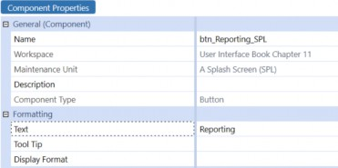
Figure 11.22
This button will be just to the right of our logo on the Dashboard’s header, so we will select that Dashboard in our Splash Screen Panels (SPL) Dashboard Group, click the Dashboard Components tab, and use the Add Dashboard Component [+] button on the toolbar to place our button directly after the logo.
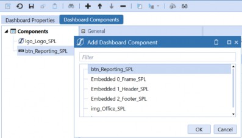
Figure 11.23
Running our main Dashboard (0_Frame_SPL) now shows this new button in its proper place. It doesn’t do anything when we click on it yet, and it doesn’t look particularly appealing, but it’s there (see Figure 11.24).
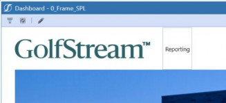
Figure 11.24
Let’s address the cosmetic issues first, then we will make the button do its intended job.
To make our splash page both attractive and easy to use, we will make the navigation buttons very clean to the eye, and very obvious to the User. Two things that we can immediately do to accomplish those goals are to make the font larger on the Reporting text and remove the gray box that surrounds the button.
Clicking on the […] button on the Display Format property for our button brings up a dialog box with the various formatting options we can work with. The display properties are organized into three groups – the second group has options that apply to buttons with images on them, and the third group has options that apply to buttons that show each button’s text as a label next to the button.
For our button, only the first group of properties – the General properties – will be relevant. The first thing we will do is make the FontSize larger – 30 pixels should be about right.
There are also several color-related properties in the General section. The default appearance for a button includes a gray line around its border. Since we don’t need or want this line for our button, we can change the color of this border to Transparent. This is a very useful option that is included with every color-related property throughout the OneStream platform.
We will also change the HoverColor property from Use Default to the color option XFLightBlue (Figure 11.25). This is the color that is used in many places in OneStream’s standard User Interface, including toolbars, section dividers, and as the background color for selected Components within Dashboard administration. Choosing this color as the hover color for our button will make it show this background when the User moves their mouse over the button and will look very consistent with the rest of the standard OneStream User Experience.
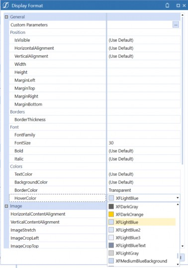
Figure 11.25
Splash Screens and Home Pages › Adding Navigation Buttons
Making Copies of Our Button
Before we make this button functional, let’s add the other two buttons we have planned for our header. The easiest way to do this is to right-click on our existing button, select copy, and then right-click again and select paste (Figure 11.26). If we do this twice, we will have two more identical buttons, each with _Copy added as an extension.
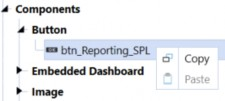
Figure 11.26
Using the Rename Selected Item button in the toolbar, we will rename the first copy of our button btn_Planning_SPL, and the second copy btn_Consolidation_SPL.
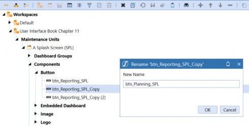
Figure 11.27
We now have three identical buttons. As far as the appearance of these buttons goes, the only thing we want to be different between them is the text they display; so, for the two new buttons, we will change the Text properties to Planning and Consolidation as appropriate.
Just as we did with our Reporting button, we can now add these two additional buttons to our header Dashboard (1_Header_SPL) using the Dashboard Components tab and the Add Dashboard Component [+] toolbar button.
When we test our Dashboard now, and hover our mouse over one of the buttons, we can see the results of our formatting changes, and the addition of the new buttons (Figure 11.28).
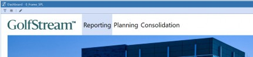
Figure 11.28
The font size looks good, and the hover color – highlighting the button – is what we wanted, but there are still some cosmetic improvements we can make.
First, the buttons are too close together, with each button wide enough to fit its text, but no wider – this is the default behavior for the width property. Similarly, the grey mouse-hover color looks good, but it might look better if it didn’t stretch all the way from the top to the bottom of our embedded header Dashboard. Like the buttons’ widths, this is also the result of using the default height for our buttons; unless we specify a height, the buttons will expand vertically to use all the space available. With a little trial and error, we find that a width of 400 and a height of 50 looks pretty good.
Splash Screens and Home Pages › Adding Navigation Buttons
Formatting Components with Parameters
We can, of course, update all three buttons to have these consistent display settings. But there is an easier way – especially if we are working on a Dashboard that has multiple similar Components that we want to keep consistent both now and following any future modifications.
OneStream’s Dashboard parameters are another extremely powerful and versatile tool at your disposal and can be leveraged to perform a multitude of functions. Parameters are often used to provide lists of valid Dimension Members to choose from when running a Report, or to store information provided by a User, or to hold application-wide values that change infrequently – but shouldn’t be hard-coded – such as the name of the current active Forecast Scenario.
Parameters can also be used to hold just about any text that you want to use in multiple places, but only update in one place. As you have probably noticed, even though we use convenient dialog boxes with complete lists of formatting properties and valid values when configuring a Component, the actual formatting information is stored in the Display Format property as a line of plain text. For example, to configure all three of our buttons the same, using the properties we have settled on, we could configure just one of them, and then copy and paste the text from that one button’s display format to the other two. But if we use a parameter to hold that formatting string, any future changes can simply be made to the parameter, and all Components using that parameter will be updated simultaneously.
To do this with our buttons, first we will create a parameter to store our formatting string. When we click on the Parameters category in our Maintenance Unit, the Create Parameter button will be activated on the toolbar (Figure 11.29). Clicking this button will allow us to create a new parameter, which we will name prm_ButtonFormat_SPL to maintain consistency with our naming convention.
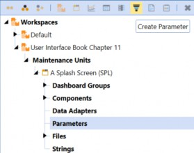
Figure 11.29
As we have discussed, there are many use cases for parameters within the OneStream platform, and multiple different Types of parameters. We will be using this parameter to store a single string of text, so we will use the default Parameter Type of Literal Value. For now, we will leave the other properties blank.
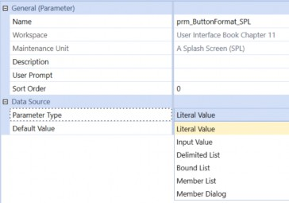
Figure 11.30
When we have configured one of our buttons ‘just right’ we can highlight the full text of the Display Format for that button, copy that text into our clipboard, and then paste that text as the Default Value property of our parameter (Figures 11.31 & 11.32).
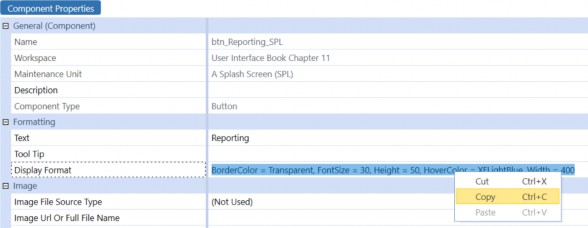
Figure 11.31
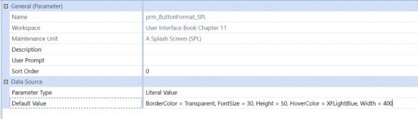
Figure 11.32
Now, for each of our buttons, we can delete the text in the Display Format property, use the […] open button to open the formatting dialog box, and use the […] button on the Custom Parameters button to select the parameter we just created.
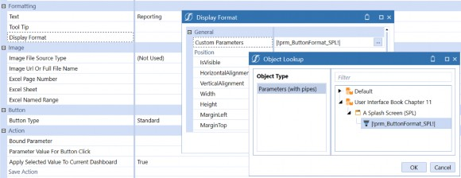
Figure 11.33
When we close these dialog boxes, the Display Format will simply show
|!prm_ButtonFormat_SPL!|. This is, of course, the name of our parameter, and it includes the opening and closing punctuation that lets OneStream know that this is a parameter (|! and !|).
We can now copy and paste this parameter from this button to the other two, replacing the specific display formatting for each (Figure 11.34). Any future changes we wish to make to our buttons (or any buttons we may add in the future) can simply be made to the parameter value.
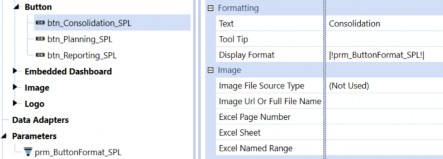
Figure 11.34
Splash Screens and Home Pages › Adding Navigation Buttons
The Reporting Button
Now that we have the three navigation buttons added to our Dashboard, and they are looking fantastic, it’s time to make them actually DO something. We will start with our Reporting button.
In our sample application, we have installed and configured the OneStream MarketPlace solution called Guided Reporting (GDR). The main Dashboard for this solution is named 0_Frame_GDR_Main_OnePlace. If you have this solution installed in your environment, you will see this Dashboard in the XFT Guided Reporting (GDR) Maintenance Unit, under the OnePlace (GDR) Dashboard Group (Figure 11.35). Although we will use this Dashboard in our example, the same process will work for any other Dashboard in your application, including your own custom Dashboards.
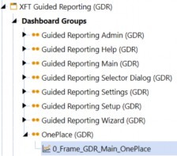
Figure 11.35
With our Dashboard Component btn_Reporting_SPL selected, the lower half of the properties list includes a section called Action. These are the properties that control what happens when a User clicks the button. For this button, we want the User to be directed to the Guided Reporting home page. To make this happen, we will select the Navigation Action called Open Page.
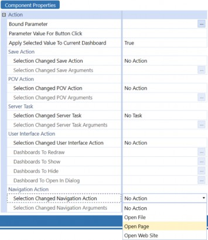
Figure 11.36
With the Navigation Action set to Open Page, the Selection Changed Navigation Arguments property immediately below this will become active. Clicking the […] button for this property will open a dialog box with a long list of syntax examples that are valid for this property (Figure 11.37).
For our Reporting button, the relevant syntax for this property is the second one on the list, which opens a specified Dashboard in the same tab the current Dashboard is displayed in. There is also an example showing how to open a Dashboard in a new tab by adding OpenInNewXFPage=True to the string, which would leave our Splash Dashboard open in its current tab.
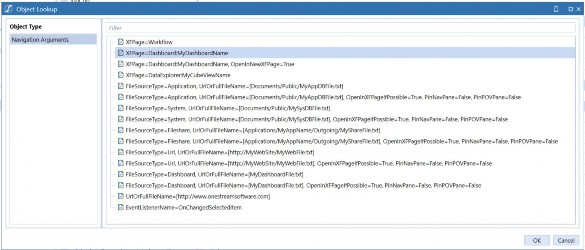
Figure 11.37
Note that although this list has many useful examples, it is not exhaustive. There are many combinations of options that are not shown but which are valid – for example, the option to set
PinNavePane=True is shown for several examples, but not every possible case where it can be used if desired.
Selecting the example closest to the use case we want (in this example, XFPage=Dashboard:MyDashboardName) and clicking OK places that text into the Navigation Arguments property.
To complete the configuration of this button, we simply replace the example Dashboard name (MyDashboardName) with the actual name of the Dashboard we want this button to direct us to (in this case, 0_Frame_GDR_Main_OnePlace).
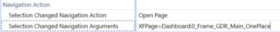
Figure 11.38
Now, if we run our Dashboard and click on the Reporting button, we are taken directly to the
Guided Reporting home page (Figure 11.39).
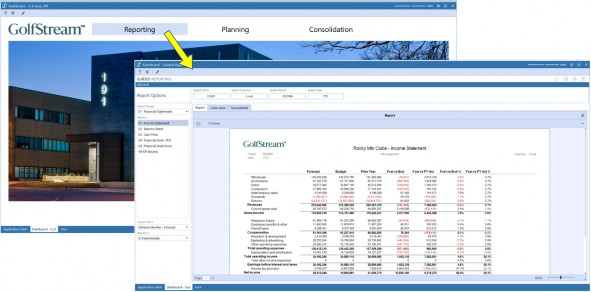
Figure 11.39
To navigate back to our Splash Dashboard, we can simply click the Back button at the top-left corner of the screen.
Splash Screens and Home Pages › Adding Navigation Buttons
The Consolidation Button
Next, we will configure the action for our Consolidation button. When the User clicks this button, we want them to be directed to the Workflow appropriate for this User, the Actual Scenario, and the current global Time period for our application. To accomplish this, we will configure two actions for this button – we will use the POV Action to change the active Workflow selections, plus the Navigation Action to direct the User to the Workflow navigation page itself.
For the POV Action, we will select Change Workflow as the Selection Changed POV Action (the options that include Change POV would allow you to update the User’s Member selections on the POV Pane, which is not necessary for this example). With this Action selected, the Selection Changed POV Arguments property is now active. Clicking the […] button for that property will provide examples of the syntax required by this property; we will select the example that includes the WFProfile, WFScenario, and WFTime settings (Figure 11.40).
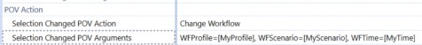
Figure 11.40
To update the arguments with our required settings for this example, we will use a few different techniques, including hard-coded text, a global substitution variable, and a setting specific to the User currently signed on.
First, and simplest, for the WFScenario we will simply replace MyScenario with the name of the Scenario Member that we want the User’s Workflow set to when this button is clicked – in this case, Actual, as seen in Figure 11.41 below.
For the WFTime setting, we will use a global substitution variable called GlobalTime. Much like the logo file, in the Application Properties for every OneStream application, there is an Administrator-set default Time period (Figure 11.41).
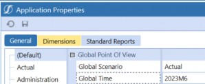
Figure 11.41
This setting can be easily retrieved throughout the OneStream platform using the syntax
|GlobalTime|. This can be manually typed in to replace the MyTime text. However, if you can’t quite remember the name of that variable, there is a very convenient way to look it up. The toolbars for many administrative screens (including Dashboards) include an Object Lookup button (Figure 11.42).
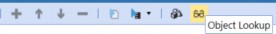
Figure 11.42
This button will open a dialog box that allows you to find and copy the names or syntax for many Types of objects, including substitution variables. Clicking this button, selecting Substitution Variables, then filtering for global will provide you with a short list of useful examples, including
|GlobalTime|. You can select this item and click Copy to Clipboard.
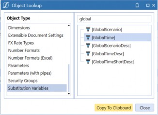
Figure 11.43
Then, you can simply paste that variable into the WFTime setting to replace the sample MyTime text (Figure 11.44).
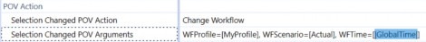
Figure 11.44
For the WFProfile setting, we will use a simple technique often employed in OneStream implementations. Each OneStream User profile includes four free-form text fields, that can be used for anything your application design requires. In this sample application, we have decided to use the Text 1 property for each User to identify which (if any) Workflow Profile is appropriate for this User when working on the Consolidation process (Figure 11.45).
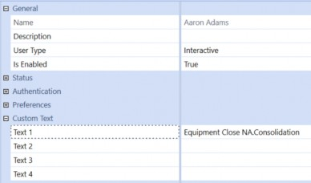
Figure 11.45
Then, just as we did for the global Time period, we can use the Object Lookup tool to find the appropriate substitution variable for this User property.
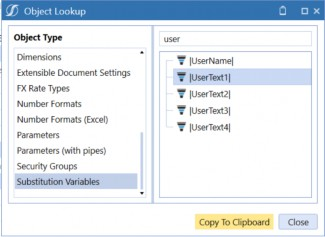
Figure 11.46
Again, we can copy and paste the substitution variable (this time, for the current User’s Text 1 property) directly to the Change POV Arguments property for our button (this time, for the WFProfile setting).
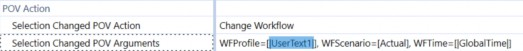
Figure 11.47
Now that we have configured the Consolidation Button to change the User’s selected Workflow settings, we need to do one last thing: set the Navigation Action so that clicking the button also opens that Workflow page.
Much like we did with the Reporting button, for this Consolidation button we will set the Selection Changed Navigation Action to Open Page and use the […] button to find an example of the syntax we want for the Navigation Arguments. For the Consolidation button, the Navigation Arguments setting is very simple – the first example in the list has the exact syntax we need, and there is no ‘example’ text that needs to be updated (Figure 11.48) – since the button has already changed the Workflow to the required selections, all we need to do is open OneStream’s Workflow page.
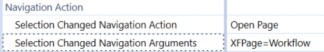
Figure 11.48
To fine-tune the navigation action, we can also include PinNavPane=True in our Navigation Arguments (Figure 11.49). When the button is clicked, this will open the Workflow Navigation pane on the left side of the screen and pin it open so it doesn’t close until the User unpins it.
Although this isn’t included in the XFPage=Workflow example provided by the Navigation Arguments dialog box, it is used in several other examples, and will work with any configuration.
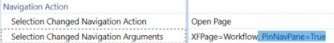
Figure 11.49
There is one final thing we can do to make our Consolidation button even more User-friendly. Many Dashboard Components include a property called Tool Tip. Any text you enter in the Tool Tip will be displayed to the User when they hover their mouse over the Component. This text can be a simple hard-coded explanation of the Component’s function (e.g., Open the Consolidation Workflow), but it can also include Dashboard parameters and substitution variables to make the text very dynamic and context-specific.
For our Consolidation button, we will use the same parameters and variables we used in the Changed POV Parameter, but this time we will embed them in a User-facing explanation of the button’s function. With this added, the full configuration of our Consolidation button looks like this (Figure 11.50):
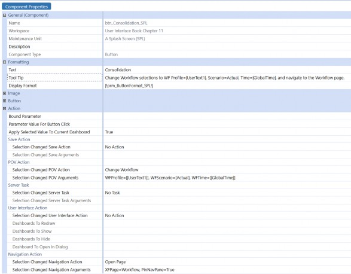
Figure 11.50
Now, if we run our Dashboard and hover our mouse over the Consolidation button, we will see text explaining the button’s function; if we click the button, we are taken directly to our appropriate Consolidation Workflow step (Figure 11.51).
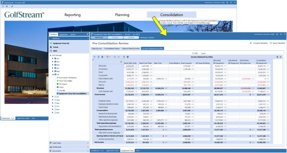
Figure 11.51
Splash Screens and Home Pages › Adding Navigation Buttons
The Planning Button
Our final button will take the User directly to their Planning Workflow. The techniques we will use for this button are very similar to those of the Consolidation button.
As with the Consolidation button, we will use the POV Action properties to change the current Workflow selections, but this time we will determine the appropriate Workflow from the User’s Text 2 parameter, which in our application is used to specify each User’s Planning Workflow. We will determine the appropriate Scenario to select by using the contents of a Dashboard parameter that has been established in our application just for this purpose; in our application, the prm_CurrentForecastScenario_STDOBJ will always be set to the Forecast Scenario currently in use.
We will also use the Navigation Action properties to open the Workflow page, but for this process, Dashboards have been configured for each Workflow step to simplify navigation and maximize screen real estate – there is no need to pin the navigation pane open.
Finally, we will add a tool tip giving a clear explanation of the function of this button. When fully configured, our Planning button looks like this:
Figure 11.52
When our User clicks this button, they are taken directly to the Dashboard that has been set as the Workspace for the assigned Forecast Workflow and Scenario (Figure 11.53).
Figure 11.53
Splash Screens and Home Pages
Adding Our KPIs
Our Dashboard is almost done! If we compare what we now have with our original sketch, all we are missing is the row of Key Performance Indicators (KPIs) at the bottom of the screen. We have already embedded our footer Dashboard (2_Footer_SPL) as the third row of our main Dashboard (0_Frame_SPL) – now we need to add some content to that section of the Dashboard.
To display our KPIs, we will use a Component called BI Viewer. This Component allows you to configure and arrange a large variety of data presentation and visualization options, such as pivot grids, charts, gauges, and maps, all with an intuitive drag-and-drop interface. We will use the BI Viewer Component’s Cards object to display our KPIs.
OneStream’s BI Viewer Components exist to display data, and the data they display can come from almost anywhere. In this simple example, we will source our KPI data from a Cube View, but we could also incorporate data from SQL databases, Business Rules, Workflow status information, and more. We will go into greater depth on BI Viewer Components in the next chapter.
Splash Screens and Home Pages › Adding Our KPIs
Creating our Dashboard Data Adapter
To retrieve our KPI values, we will create a simple Cube View, with the KPI Accounts in the rows, and columns for our Actual, Prior Year, Budget, and Forecast values. Needless to say, every OneStream application will have different dimensionality, Member names, and business requirements. For this example, we will show data and metadata from OneStream’s standard demonstration, but the concepts will be the same for any application; to recreate this, simply create a similar Cube View, with your application’s metadata.
In our example, we have configured the Cube View’s POV to use the top-level Members for most of our Dimensions – e.g., Flow, Origin, Intercompany, and all the User-Defined Dimensions are set to their top-level Members. For our Entity Dimension, we will use the current Member selected in the Point of View pane – on the right side of the screen – by setting the Cube View’s Entity POV Member to the substitution variable |PovEntity|. This will ensure that each User will see KPI values for the Entity they are interested in.
As with many OneStream applications, our demonstration application uses the UD8 Dimension to provide convenient dynamically calculated ‘reporting helpers’, such as frequently used variances, ‘percent of’ Calculations (such as ‘percent of net sales’), and many more. For the columns of our Cube View, we have leveraged these UD8 Members to provide easy access to our Current Year, Prior Year, Final Budget, and Current Forecast values. When we run our Cube View, it looks like this:
Figure 11.54
Using this Cube View, we will provide the data that our BI Viewer Dashboard Component will need to display our KPIs.
The first step in creating our BI Viewer Component is to create a Dashboard Data Adapter. From our Dashboard Maintenance Unit, select the Data Adapters category, then click the Create Data Adapter button in the toolbar. Following our usual naming convention, we will name this dat_KPIs_SPL.
As discussed above, Dashboard data can be sourced from almost anywhere – the first properties we need to configure for our data adapter are grouped together in the Data Source section. The Command Type property has a drop-down list that lets us specify the kind of data we will be working with – including two ways of working with data from Cube Views. For the Data Source Command Type we will choose Cube View MD – this means that the data adapter will understand how to work with the data in a multi-dimensional context, rather than just as rows and columns in a table (Figure 11.55).
Figure 11.55
Once we have selected the Data Source Command Type, the relevant properties for this Type of data are displayed.
The next property we will set is the name of the Cube View that we have created to provide this data. Using the […] button on the Cube View property, we can navigate to – and select – this Cube View.
Finally, for the Data Source section, we will specify a Results Table Name – this should simply be a meaningful name that will clearly describe this data. For this example, we will type in KPIs.
In the Header Text group of properties, we can see each Dimension in our model, with the default setting of Name And Description. The first Dimension we are concerned with (for our KPIs) is the Accounts Dimension, which will look best if we just display the Description; so, we will change that setting using the drop-down. We will also be working with the reporting helper Members in our UD8 Dimension – for these Members, the Member names will be most useful for us, so we will change the UD8 header text to Name (Figure 11.56). The rest of the properties can be left to their default values.
Figure 11.56
We can now test our data adapter to make sure it’s getting us the data we want, and in the format we prefer. With our data adapter selected, clicking the Test Data Adapter button in the toolbar will display our data as it will be provided to the Dashboard. The table consists of columns for each Dimension in the model, and each row contains a data point for each cell in our Cube View, with each Dimension column containing either the Member name, description, or both, depending on the selection we made for that Dimension. Notice that using the selections we made in our data adapter, the Account Dimension column shows just the description, and the UD8 Dimension is showing just the Member name (Figure 11.57).
Figure 11.57
Splash Screens and Home Pages › Adding Our KPIs
Creating our BI Viewer Component
Now that we have our Cube View to collect the data we need, and our data adapter to organize that data in a table that will be easy for our Dashboard to work with, we are ready to configure our BI Viewer Component.
As with our other Components, we start by selecting the Component category in our Dashboard Maintenance Unit, clicking the Create Dashboard Component button in the toolbar, and selecting BI Viewer from the list of Component Types.
The BI Viewer has three tabs: Component Properties, Data Adapters, and BI Designer. On the first tab, using our naming convention, we will call this Component biv_KPIs_SPL. The first tab also has properties to show or hide a Toggle Size button and Borders outlining the Component. To keep the clean, uncluttered look of our Dashboard, we will set these to False. All other properties can be left to their default values (Figure 11.58).
Figure 11.58
On the second tab, we add our Data Adapter to the BI Viewer. This adapter (or adapters) will provide the data we will display via the charts, graphs, and other objects on the BI Viewer.
Clicking the [+] button in the toolbar displays the data adapters available to us – in our case, there is only one, but more complex Dashboards might include data from multiple sources. We will select our data adapter and click the Save button in the toolbar. With the data adapter added, and the BI Viewer Component saved, the BI Designer tab is now selectable.
Clicking the BI Designer tab presents us with a ‘blank canvas’, a toolbar at the top of the screen showing the various Types of objects we can include, and a panel on the left side of the screen showing the data fields that have been provided by the data adapter.
Just as a quick experiment to get a feel for working with the BI Viewer and the data we have at hand, let’s add a simple grid to the Dashboard. Clicking the Grid button places an empty white box on the screen – this is the beginning of a data grid (Figure 11.59). We now need to tell the grid what data we want to see.
Figure 11.59
From the list of Data Source fields on the left side of the screen, drag the Account field onto the
Columns section of the grid’s Data Items panel (Figure 11.60).
Figure 11.60
We now see a list of the Accounts that are included on our Cube View. Notice that, based on how we configured our Data Source, we are seeing the Account Member descriptions, not the Member names (Figure 11.61).
Figure 11.61
If we drag the Amount field into the Columns section, we will see the totals for each of the Accounts in our Data Source (Figure 11.62).
Figure 11.62
Our Cube View is using the reporting helper Members from our UD8 Dimension to dynamically retrieve the various Scenarios that we are interested in. If we pull the UD8 Dimension into the Columns section between Account and Amount, we will now see all the data for each Scenario (Figure 11.63).
Figure 11.63
If we right-click on the Grid object, a menu will appear that will allow us to convert the Grid to other object Types – if we select Convert To > Chart, the currently selected data will be included in a bar chart like this:
Figure 11.64
If we drag our UD8 Dimension from the Arguments section to the Series section, the graph will change accordingly (Figure 11.65).
Figure 11.65
Now that we have a feel for working with the BI Viewer Component, let’s start configuring the KPIs for our Dashboard. To delete our practice chart, click the red [X] delete button. We are now back to our blank canvas.
We will be using BI Viewer Cards to display our KPIs. But before we configure this object, we will do some simple Dashboard-based manipulation of our data.
You may have noticed that although our Data Source is giving us all the information in our Cube View, it is formatted with a table that has just one ‘value’ field – Amount. All the other columns are the metadata that define the meaning of each Amount. For our KPI columns, it would be convenient to have specific value fields for two of our UD8 Members – Actual and Prior Year. We can include those fields by adding ‘calculated fields’.
If we right-click on the list of existing fields and select Create Calculated Field, the Expression Editor dialog will open (Figure 11.66). This is where we explain to the BI Viewer what information we want to include in our calculated fields.
Figure 11.66
Since we want amount fields specific to the Current Period Actual and Prior Year Actual UD8 Members, we will use this dialog to filter for those values in our new fields. First, we will create a field called Actual that selects data from the UD8 Member called Actual using the Logical Iif function. Selecting Logical in the first panel, and Iif in the second panel, we see an explanation of the syntax for this function in the third panel. If we double-click on Iif in the second panel, the top of the screen displays the beginning of our expression (Figure 11.67).
Figure 11.67
To have this new field display the value from the UD8 Actual Member, we can position our cursor before the first comma of the Iif expression, then use the Columns selector to choose the UD8 Dimension by double-clicking on it (or we can simply type this in). To check the UD8 Dimension for the Member called Actual, we manually type an equal sign and the name of the Member surrounded by single quotes.
Figure 11.68
The second parameter of this Iif expression tells the field what to show if this condition is true. If the UD8 Member is Actual, we want this new field to show the Amount, so we can position our cursor after the first comma and double-click the Amount field. The third parameter defines what the new field should display if the UD8 Member is NOT Actual – for this third parameter, we just enter the number 0 (Figure 11.69).
Figure 11.69
When we click OK, the field list on the left panel now shows a new calculated field with the default name Calculated Field 1. We will right-click on this field and rename it to Actual.
Figure 11.70
For our KPIs, our Dashboard will highlight the variance between this year and last year; it will also be helpful to have a field specific to the PrYrAct Member of the UD8 Dimension. Repeating this process, we will create another calculated Member like this:
Figure 11.71
With this second calculated field renamed PriorYear, we are ready to configure our KPIs (Figure 11.72).
Figure 11.72
As mentioned, the BI Viewer object we will use for our KPIs is called Cards. Clicking this button on the toolbar gets a blank object to work with, and dragging the calculated Actual and PriorYear fields onto the respective Actual and Target positions in the Cards section of the Data Items panel gets us started. Dragging the Account field to the Series section creates a card for each of the rows of our Cube View (Figure 11.73).
Figure 11.73
We will be displaying these cards in the narrow footer section at the bottom of our Dashboard, so screen real estate will be at a premium. Although we drew four KPI placeholders in our initial design sketch, we would really like to include as many as we can fit in the space available without the screen looking cluttered. The first thing we can do to conserve some space is remove the grey Cards 1 bar at the top of the screen by right-clicking on that bar and toggling off the Show Caption menu item (Figure 11.74).
Figure 11.74
Next, we can click on the Gear button in the Cards section of the Data Items pane and adjust the way the cards are formatted. Selecting the Compact template makes the tiles much more efficient in their use of space (Figure 11.75).
Figure 11.75
Finally, we will want our KPI cards arranged in a single horizontal row along the bottom of our Dashboard. Thus, we select Design in the menu bar, click the Arrange in Rows button, and set the Count to 1 (Figure 11.76).
Figure 11.76
We can now save our BI Viewer object and see how it looks on our Dashboard.
To add our BI Viewer to the Dashboard’s footer section, we simply select the Dashboard 2_Footer_SPL, click the Dashboard Components tab, click the [+] Add Dashboard Component button, and select our BI Viewer Component.
Figure 11.77
Now we can run our main Dashboard and see… well, where are our KPIs? If you look very closely, you will notice that the only thing that seems to have changed on our Dashboard is that there are now a pair of thin scroll bars at the bottom and right side of our footer section. If we drag the bottom scroll bar to the right, we will find that our KPIs have been hiding far off the right side of the screen (Figure 11.78).
Figure 11.78
When we first created our footer Dashboard, we tentatively configured it as a horizontal stack panel, but now that we are further along with our build, we will want to reconsider that. Our BI Viewer KPI cards look great, but since the BI Viewer Component doesn’t have a ‘width’ property, it has a habit of taking more space than it really needs. To easily solve this, we can change the footer Dashboard from Horizontal Stack Panel (which doesn’t enforce any limits on how far Components can stretch) to a Grid (which does).
After changing the 2_Footer_SPL Dashboard to Grid with 1 row and 1 column, and re-running the Dashboard, the footer section looks like this:
Figure 11.79
Closer! But we still will need to make a couple of adjustments. First, the BI Viewer is still a little too tall to fit in the 100-pixel space we have allocated for the footer. Also, we should probably include a label to clarify the context for these KPIs – e.g., what Entity are we using, and what are we comparing these values to? And a minor cosmetic tweak: the right edge of the final KPI card should line up with the right edge of the picture.
The first issue is very simple to fix. Changing the height of row 3 on the main Dashboard (0_Frame_SPL) changes the bottom of the screen to look like this – no more scroll bars, and the KPI cards fit nicely.
Figure 11.80
Next, to add an explanatory label to our KPI panel and adjust the alignment, we will change the number of columns on the footer Dashboard from one to three. This way, we can have a column to display some text to the left of the KPIs, and another narrow column after the KPIs to add some white space to align the KPIs with the right edge of the picture.
For our explanatory text, we will add a Label Component. With the Components category selected in our Dashboard Maintenance Unit, we can click the Create Dashboard Component button in the toolbar and select the Component Type Label. Again, we will follow our naming convention and call this Component lbl_KPIs_SPL.
For the text property, we could simply type in a few words explaining the context of the KPIs, but we can also make this label much more dynamic and informative. The Cube View that is providing the KPI data is using substitution variables to set the POV for the Entity and Time Dimensions – we can do the same with our label. Using the |PovEntityDesc| and |GlobalTimeDesc| substitution variables, we can show the User-friendly descriptions of both the Entity and Time period Members currently in use, and embed them in a meaningful label, like this:
|PovEntityDesc| |GlobalTimeDesc| Actual vs Prior Year:
For our label’s display formatting, we can use the […] button to open the formatting dialog, and set MarginLeft to 30 (to align with the white space we have used before our logo and image Components), set MarginRight to 10 (to provide a little white space between this label and the KPIs), and UseTextWrapping to True (to use line breaks to adjust the text to fit in the available space).
Figure 11.81
On our footer Dashboard’s Dashboard Properties tab, we will change the number of columns to 3 to accommodate our new label on the left, the BI Viewer, and some white space to provide visual alignment on the right side of the screen. We will set the Column 1 Width to 150, and the Column 3 width to about 20.
On the Components tab, we will use the [+] Add Dashboard Component on the toolbar to add the label Component and use the Move Up / Move Down arrow buttons to ensure the label comes before the BI Viewer (Figure 11.82).
Figure 11.82
With these last adjustments, we should have our Dashboard just the way we pictured it when we drew our first sketch on a piece of scrap paper – or maybe even a little better!
Just a reminder – here’s where we started:
Figure 11.83
And here’s where we are now:
Figure 11.84
Not too bad!
But one last thing. Our reason for building this Dashboard was to give our Users a simple, intuitive, and attractive point of entry when signing on to our OneStream application. The last thing we need to do is to set this Dashboard as our Users’ home page.
There are a few ways to accomplish this. Any individual User, when signed on to the application, can navigate to this Dashboard (or any other page) and click the OneStream logo in the title bar of the current screen (that’s the lower of the two logos visible in the upper-right corner of the screen).
Clicking this logo opens a menu that includes the option to Set Current Page As Home Page. For Administrators, there is also an option to Save Home Page Setting As Default for New Users (Figure 11.85).
Figure 11.85
And, within the Administrative Solution Tools MarketPlace solution, there is a Home Page Manager that uses a OneStream Dashboard to provide application Administrators with a simple, intuitive, and attractive way to manage the home pages of the rest of the User community (Figure 11.86).
Figure 11.86
Splash Screens and Home Pages
Conclusion
Let’s step back for a moment and think about what we have just created.
Before we started this chapter, when signing on to the application, our End-Users would have been greeted by a blank screen. If they had some training and a good understanding of the design of our application’s underlying model, dimensionality, etc., they would certainly have been able to navigate to any content they were interested in, but the clicks involved wouldn’t necessarily have been obvious.
Now, after completing this exercise, our End-Users have a completely different experience. The first thing they see is a clear, clean, inviting, and intuitive home page, with one-click navigation to the reporting content and Workflows they are most concerned with. In turn, they also have up-to-date values for their most critical key performance indicators right on the very first screen.
And(!) we created this without a single line of code. Now that we have mastered the fundamental concepts of Dashboard configuration, we will build on these techniques in the chapters that follow and learn how to create even more sophisticated User Experiences for Executive Dashboards, Financial Planning processes, and more.